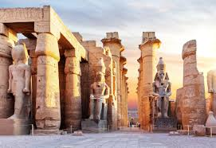
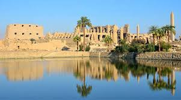
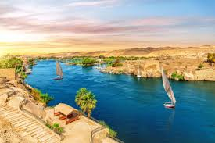
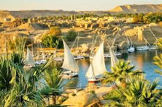

Cairo
Cairo, the capital of Egypt, is known as the “City of a Thousand Minarets” for its Islamic architecture. It is home to the famous Egyptian Museum, the bustling Khan El Khalili bazaar, and is close to the Pyramids of Giza.


Luxor
Luxor is often called the worlds greatest open-air museum. It features the Karnak Temple, Luxor Temple, and the Valley of the Kings where ancient pharaohs were buried.


Aswan
Aswan, located on the Nile River, is known for its beautiful scenery, Philae Temple, and as the gateway to Abu Simbel. It is a peaceful city famous for Nubian culture.

